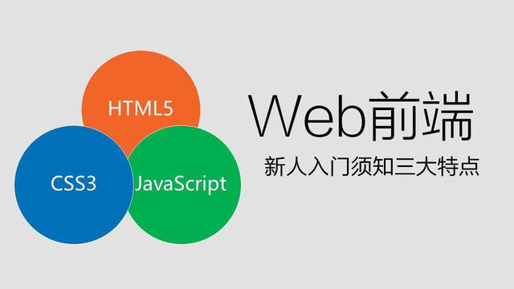

<!DOCTYPE html><html><head><meta charset="utf-8"><title>如何有效的学习Web前端开发？ | 技术学派</title><meta name="viewport" content="width=device-width,initial-scale=1,maximum-scale=1"><meta name="keywords" content="IT培训, Python, 大数据, 人工智能, Web前端, PHP, python"><meta name="description" content="一个好的Web前端工程师在知识体系上既要有广度，又要有深度，所以很多大公司即使出高薪也很难招聘到理想的前端开发工程师。那么如何系统的学习企业实用的web前端技术呢？当大家有了一些HTML的静态布局的基础，那么我们学完HTML、CSS这些最简单的东西就算是有了小小的入门，知道了Web前端到底是做什么的，那么我们入门之后应该学习哪些系统的前端知识体系呢？如果我们大家选择自学，那么我们就应该根据个人的学"><meta name="keywords" content="python"><meta property="og:type" content="article"><meta property="og:title" content="如何有效的学习Web前端开发？"><meta property="og:url" content="http://www.JiShuXuePai.com/blog/学习答疑/学习答疑/如何有效的学习Web前端开发？/index.html"><meta property="og:site_name" content="技术学派"><meta property="og:description" content="一个好的Web前端工程师在知识体系上既要有广度，又要有深度，所以很多大公司即使出高薪也很难招聘到理想的前端开发工程师。那么如何系统的学习企业实用的web前端技术呢？当大家有了一些HTML的静态布局的基础，那么我们学完HTML、CSS这些最简单的东西就算是有了小小的入门，知道了Web前端到底是做什么的，那么我们入门之后应该学习哪些系统的前端知识体系呢？如果我们大家选择自学，那么我们就应该根据个人的学"><meta property="og:locale" content="zh-CN"><meta property="og:image" content="http://www.jishuxuepai.com/blog/学习答疑/学习答疑/如何有效的学习Web前端开发？/01.jpg"><meta property="og:updated_time" content="2018-06-13T09:49:00.000Z"><meta name="twitter:card" content="summary"><meta name="twitter:title" content="如何有效的学习Web前端开发？"><meta name="twitter:description" content="一个好的Web前端工程师在知识体系上既要有广度，又要有深度，所以很多大公司即使出高薪也很难招聘到理想的前端开发工程师。那么如何系统的学习企业实用的web前端技术呢？当大家有了一些HTML的静态布局的基础，那么我们学完HTML、CSS这些最简单的东西就算是有了小小的入门，知道了Web前端到底是做什么的，那么我们入门之后应该学习哪些系统的前端知识体系呢？如果我们大家选择自学，那么我们就应该根据个人的学"><meta name="twitter:image" content="http://www.jishuxuepai.com/blog/学习答疑/学习答疑/如何有效的学习Web前端开发？/01.jpg"><link rel="stylesheet" href="/libs/bootstrap/bootstrap-grid.css"><link rel="stylesheet" href="/libs/font-awesome/css/font-awesome.min.css"><link rel="stylesheet" href="/libs/titillium-web/styles.css"><link rel="stylesheet" href="/libs/source-code-pro/styles.css"><link rel="stylesheet" href="/css/style.css"><script src="/libs/jquery/jquery.min.js"></script><link rel="stylesheet" href="/libs/lightgallery/css/lightgallery.min.css"><link rel="stylesheet" href="/libs/justified-gallery/justifiedGallery.min.css"><script>var _hmt=_hmt||[];!function(){var e=document.createElement("script");e.src="//hm.baidu.com/hm.js?4c1bd812de3c30edbaa2b803c66f0a04";var t=document.getElementsByTagName("script")[0];t.parentNode.insertBefore(e,t)}()</script></head></html><body><div id="wrap"><header id="header"><div id="header-outer" class="outer"><div class="container"><div class="container-inner"><div id="header-title"><h1 class="logo-wrap"><a href="/" class="logo"></a></h1></div><div id="header-inner" class="nav-container"><a id="main-nav-toggle" class="nav-icon fa fa-bars">菜单</a><div class="nav-container-inner"><ul id="main-nav"><li class="main-nav-list-item"><a class="main-nav-list-link" href="/">主页</a></li><li class="main-nav-list-item"><a class="main-nav-list-link" href="/edu/index.html">学编程</a></li><li class="main-nav-list-item"><a class="main-nav-list-link" href="/blog/">博客</a></li><li class="main-nav-list-item"><a class="main-nav-list-link" href="/tips.html">学习建议</a></li><li class="main-nav-list-item"><a class="main-nav-list-link" href="/about.html">关于</a></li></ul><nav id="sub-nav"><div id="search-form-wrap"><form class="search-form"><input type="text" class="ins-search-input search-form-input" placeholder="搜索"> <button type="submit" class="search-form-submit"></button></form><div class="ins-search"><div class="ins-search-mask"></div><div class="ins-search-container"><div class="ins-input-wrapper"><input type="text" class="ins-search-input" placeholder="想要查找什么..."> <span class="ins-close ins-selectable"><i class="fa fa-times-circle"></i></span></div><div class="ins-section-wrapper"><div class="ins-section-container"></div></div></div></div><script>window.INSIGHT_CONFIG={TRANSLATION:{POSTS:"文章",PAGES:"页面",CATEGORIES:"分类",TAGS:"标签",UNTITLED:"(未命名)"},ROOT_URL:"/",CONTENT_URL:"/content.json"}</script><script src="/js/insight.js"></script></div></nav></div></div></div></div></div></header><div class="container"><div class="main-body container-inner"><div class="main-body-inner"><section id="main"><div class="main-body-header"><h1 class="header"><a class="page-title-link" href="/categories/学习答疑/">学习答疑</a><div class="author"></div></h1></div><div class="main-body-content"><article id="post-学习答疑/如何有效的学习Web前端开发？" class="article article-single article-type-post" itemscope itemprop="blogPost"><div class="article-inner"><header class="article-header"><h1 class="article-title" itemprop="name">如何有效的学习Web前端开发？</h1></header><div class="article-meta"><div class="article-date"><a href="/blog/学习答疑/学习答疑/如何有效的学习Web前端开发？/" class="article-date"><time datetime="2018-06-13T09:36:00.000Z" itemprop="datePublished">2018-06-13</time></a></div><div class="article-tag"><i class="fa fa-tag"></i> <a class="tag-link" href="/tags/python/">python</a></div></div><div class="article-entry" itemprop="articleBody"><p>一个好的Web前端工程师在知识体系上既要有广度，又要有深度，所以很多大公司即使出高薪也很难招聘到理想的前端开发工程师。那么如何系统的学习企业实用的web前端技术呢？</p><p>当大家有了一些HTML的静态布局的基础，那么我们学完HTML、CSS这些最简单的东西就算是有了小小的入门，知道了Web前端到底是做什么的，那么我们入门之后应该学习哪些系统的前端知识体系呢？如果我们大家选择自学，那么我们就应该根据个人的学习能力，制定好每天学习“量”，今天技术学派帮大家梳理了一条学习路线。</p><h3 id="第一阶段-HTML、CSS、JavaScript"><a href="#第一阶段-HTML、CSS、JavaScript" class="headerlink" title="第一阶段 HTML、CSS、JavaScript"></a>第一阶段 HTML、CSS、JavaScript</h3><p>我们学习Web前端开发系统知识，除了学习JavaScript之外，其他的千万不要买书看，对于html，css看视频学习就可以了，看书完全是在浪费时间，而且也不会动手去写代码，w3cschool是我们学习Web前端开发的标准，可以随时查阅，为什么我说除了学习JavaScript之外其他的知识不用看书，这个你以后工作了之后就会明白，在这里推荐JavaScript书籍《JavaScript权威指南》。建议没有基础的同学可以看看，如果你工作了，或许对你用处并不大。</p><p></p><h3 id="第二阶段-学习框架"><a href="#第二阶段-学习框架" class="headerlink" title="第二阶段 学习框架"></a>第二阶段 学习框架</h3><p>Web前端框架都是用JavaScript封装出来的，所以对于JavaScript一定要掌握好，一定要了解es6，和现在比较流行的主流框架如React、Vue、Angular。现在公司都会用框架，但不止于这些，所以不会框架话，在找工作中是很困难的。</p><p></p><h3 id="第三阶段-多做几个项目练手"><a href="#第三阶段-多做几个项目练手" class="headerlink" title="第三阶段 多做几个项目练手"></a>第三阶段 多做几个项目练手</h3><p>当我们有了一定的基础后，一定要多做几个项目去练手，这样我们才会有进步，可以找到身边从事前端的朋友要一些完整的项目，然后去分析前端部分，自己尝试去做项目，因为我们目前只会做前端部分，所以后端的代码我们不会，那我们就需要用一些假的数据来填充页面了，所以我们不需要从数据库中获取，我们练习的时候，写固定的数据就可以的，多做几个大型网站让自己更加熟练，然后掌握一些解决问题的能力，如果自己可以独立完成一些网站的项目，那么在一线城市找个7000-8000的工作是没问题的。</p><p></p><h3 id="第四阶段-全栈发展"><a href="#第四阶段-全栈发展" class="headerlink" title="第四阶段 全栈发展"></a>第四阶段 全栈发展</h3><p>如果你觉得自己学习能力可以，接受能力也行，那么可以在学习一门后端语言，如：PHP，Java，Python都可以，如果你前后端的知识都可以掌握，那么你就是全栈工程师的材料，以后可以慢慢发展成为全栈工程师，年薪达到30万是可以的，站在全栈的角度上，深入的学习前端和后端，可以更好的了解Web系统的开发流程以及各个阶段的相互作用。</p><p></p><h3 id="学习建议"><a href="#学习建议" class="headerlink" title="学习建议"></a>学习建议</h3><ol><li>必须掌握基本的Web前端开发技术，其中包括CSS、HTML、DOM、BOM、Ajax、JavaScript等，在掌握这些技术的同时，还要清楚地了解它们在不同浏览器上的兼容情况、渲染原理和存在的Bug。</li><li>在一名合格的前端工程师的知识结构中，网站性能优化、SEO和服务器端的基础知识也是必须掌握的。</li><li>必须学会运用各种工具进行辅助开发，如：Webpack、Gulp等。</li><li>除了要掌握技术层面的知识，还要掌握理论层面的知识，包括代码的可维护性、组件的易用性、分层语义模板和浏览器分级支持等等。</li></ol><p>代码的质量是前端开发中应该重点考虑的问题之一。例如，实现一个网站界面可能会有无数种方案，但有些方案的维护成本会比较高，有些方案会存在性能问题，而有些方案则更易于维护，而且性能也比较好。这里的关键影响因素就是代码质量。</p></div><footer class="article-footer"><a data-url="http://www.JiShuXuePai.com/blog/学习答疑/学习答疑/如何有效的学习Web前端开发？/" data-id="cjidw4td00000zgfypwrpvb7y" class="article-share-link"><i class="fa fa-share"></i>分享到</a><script>!function(n){n("body").on("click",function(){n(".article-share-box.on").removeClass("on")}).on("click",".article-share-link",function(t){t.stopPropagation();var e,a=n(this),o=a.attr("data-url"),r=encodeURIComponent(o),i="article-share-box-"+a.attr("data-id"),s=a.offset();if(n("#"+i).length){if((e=n("#"+i)).hasClass("on"))return void e.removeClass("on")}else{var l=['<div id="'+i+'" class="article-share-box">','<input class="article-share-input" value="'+o+'">','<div class="article-share-links">','<a href="https://twitter.com/intent/tweet?url='+r+'" class="article-share-twitter" target="_blank" title="Twitter"></a>','<a href="https://www.facebook.com/sharer.php?u='+r+'" class="article-share-facebook" target="_blank" title="Facebook"></a>','<a href="http://pinterest.com/pin/create/button/?url='+r+'" class="article-share-pinterest" target="_blank" title="Pinterest"></a>','<a href="https://plus.google.com/share?url='+r+'" class="article-share-google" target="_blank" title="Google+"></a>',"</div>","</div>"].join("");e=n(l),n("body").append(e)}n(".article-share-box.on").hide(),e.css({top:s.top+25,left:s.left}).addClass("on")}).on("click",".article-share-box",function(t){t.stopPropagation()}).on("click",".article-share-box-input",function(){n(this).select()}).on("click",".article-share-box-link",function(t){t.preventDefault(),t.stopPropagation(),window.open(this.href,"article-share-box-window-"+Date.now(),"width=500,height=450")})}(jQuery)</script></footer></div></article><section id="comments"><div id="gitalk_frame"></div></section></div></section><aside id="sidebar"><a class="sidebar-toggle" title="Expand Sidebar"><i class="toggle icon"></i></a><div class="sidebar-top"><p>关注我 :</p><ul class="social-links"><li><a class="social-tooltip" title="火星时代" href="http://edu.hxsd.com/edunew/topics/webfull/index.html" target="_blank"><i class="icon fa fa-dribbble"></i></a></li><li><a class="social-tooltip" title="weibo" href="#" target="_blank"><i class="icon fa fa-weibo"></i></a></li><li><a class="social-tooltip" title="rss" href="/atom.xml" target="_blank"><i class="icon fa fa-rss"></i></a></li></ul></div><nav id="article-nav"><a href="/blog/学习答疑/学习答疑/Python语言越来越火，零基础也能学会（附学习路线）/" id="article-nav-newer" class="article-nav-link-wrap"><strong class="article-nav-caption">下一篇</strong><p class="article-nav-title">Python语言越来越火，零基础也能学会（附学习路线）</p><i class="icon fa fa-chevron-right" id="icon-chevron-right"></i> </a><a href="/blog/学习答疑/学习答疑/什么样的行为出卖了你是一个程序员/" id="article-nav-older" class="article-nav-link-wrap"><strong class="article-nav-caption">上一篇</strong><p class="article-nav-title">什么样的行为出卖了你是一个程序员</p><i class="icon fa fa-chevron-left" id="icon-chevron-left"></i></a></nav><div class="widgets-container"><div class="widget-wrap widget-list"><h3 class="widget-title">分类</h3><div class="widget"><ul class="category-list"><li class="category-list-item"><a class="category-list-link" href="/categories/animate/">animate</a><span class="category-list-count">17</span></li><li class="category-list-item"><a class="category-list-link" href="/categories/git/">git</a><span class="category-list-count">1</span></li><li class="category-list-item"><a class="category-list-link" href="/categories/html/">html</a><span class="category-list-count">2</span></li><li class="category-list-item"><a class="category-list-link" href="/categories/js/">js</a><span class="category-list-count">5</span></li><li class="category-list-item"><a class="category-list-link" href="/categories/php/">php</a><span class="category-list-count">3</span></li><li class="category-list-item"><a class="category-list-link" href="/categories/vue/">vue</a><span class="category-list-count">1</span></li><li class="category-list-item"><a class="category-list-link" href="/categories/学习答疑/">学习答疑</a><span class="category-list-count">28</span></li><li class="category-list-item"><a class="category-list-link" href="/categories/插件资源库/">插件资源库</a><span class="category-list-count">4</span></li></ul></div></div><link rel="stylesheet" href="/css/tech/toc.css"><div class="widget-wrap widget-list widget-toc"><h3 class="widget-title">目录</h3><div class="widget"><div class="toc"></div><link rel="stylesheet" href="https://cdnjs.cloudflare.com/ajax/libs/tocbot/3.0.5/tocbot.css"><script src="https://cdnjs.cloudflare.com/ajax/libs/tocbot/3.0.5/tocbot.min.js"></script><script>$(function(){$(".main-body-content").find("h1,h2,h3").each(function(t){$(this).attr("id")||$(this).attr("id","list"+t)}),tocbot.init({tocSelector:".toc",contentSelector:".main-body-content",headingSelector:"h1, h2, h3",collapseDepth:2,positionFixedSelector:".widget-toc",fixedSidebarOffset:595,includeHtml:!1})})</script></div></div><div class="widget-wrap widget-list"><h3 class="widget-title">标签</h3><div class="widget"><ul class="tag-list"><li class="tag-list-item"><a class="tag-list-link" href="/tags/C/">C</a><span class="tag-list-count">1</span></li><li class="tag-list-item"><a class="tag-list-link" href="/tags/php/">php</a><span class="tag-list-count">1</span></li><li class="tag-list-item"><a class="tag-list-link" href="/tags/python/">python</a><span class="tag-list-count">13</span></li><li class="tag-list-item"><a class="tag-list-link" href="/tags/web前端/">web前端</a><span class="tag-list-count">2</span></li></ul></div></div><div class="widget-wrap widget-float"><h3 class="widget-title">标签云</h3><div class="widget tagcloud"><a href="/tags/C/" style="font-size:10px">C</a> <a href="/tags/php/" style="font-size:10px">php</a> <a href="/tags/python/" style="font-size:20px">python</a> <a href="/tags/web前端/" style="font-size:15px">web前端</a></div></div><div class="widget-wrap widget-list"><h3 class="widget-title">链接</h3><div class="widget"><ul><li><a href="http://edu.hxsd.com/edunew/topics/webfull/index.html">火星时代</a></li></ul></div></div></div></aside><script>$(function(){$(window).scroll(function(){240<=$(document).scrollTop()?($("#sidebar .sidebar-toggle").addClass("fix"),"block"==$("#sidebar .sidebar-toggle").css("display")&&$(".is-position-fixed").css("top","35px")):$("#sidebar .sidebar-toggle").removeClass("fix")})})</script></div></div></div><footer id="footer"><div class="top"><div class="inner"><div class="list"><div class="left clearfix"><dl><dt>关于我们</dt><dd><a href="/about.html" target="_blank">公司简介</a></dd><dd><a href="edu/index.html" target="_blank">联系我们</a></dd></dl><dl><dt>校区攻略</dt><dd><a href="edu/index.html" target="_blank">校区环境</a></dd><dd><a href="edu/index.html" target="_blank">住宿攻略</a></dd><dd><a href="edu/index.html" target="_blank">来校路线</a></dd></dl><dl><dt>课程培训</dt><dd><a href="edu/python.html" target="_blank">Python</a></dd><dd><a href="edu/python.html" target="_blank">Web前端</a></dd><dd><a href="edu/python.html" target="_blank">PHP</a></dd><dd><a href="edu/python.html" target="_blank">人工智能</a></dd><dd><a href="edu/python.html" target="_blank">大数据</a></dd></dl><dl><dt>常见问答</dt><dd><a href="edu/index.html" target="_blank">学费学时</a></dd><dd><a href="edu/index.html" target="_blank">学习方法</a></dd></dl></div></div><div class="tel"><tel>176-0025-8815</tel><span>北京市海淀区杏石口路81号火星时代大厦</span></div><div class="weixin"><div class="w1"> <span>头条号</span></div><div class="w1"> <span>官方微信</span></div></div></div></div><div class="bot">Copyright 2018 技术学派 京ICP备15015508号-3</div></footer><link rel="stylesheet" href="https://unpkg.com/gitalk/dist/gitalk.css"><script src="https://unpkg.com/gitalk/dist/gitalk.min.js"></script><script>var gitalk=new Gitalk({clientID:"2fbbb9980b49019d99a7",clientSecret:"152dd10e83ef6595761ea2185304f9ac8263573f",repo:"jsxp",owner:"li-kang",admin:["li-kang"]});gitalk.render("gitalk_frame")</script><script src="/libs/lightgallery/js/lightgallery.min.js"></script><script src="/libs/lightgallery/js/lg-thumbnail.min.js"></script><script src="/libs/lightgallery/js/lg-pager.min.js"></script><script src="/libs/lightgallery/js/lg-autoplay.min.js"></script><script src="/libs/lightgallery/js/lg-fullscreen.min.js"></script><script src="/libs/lightgallery/js/lg-zoom.min.js"></script><script src="/libs/lightgallery/js/lg-hash.min.js"></script><script src="/libs/lightgallery/js/lg-share.min.js"></script><script src="/libs/lightgallery/js/lg-video.min.js"></script><script src="/libs/justified-gallery/jquery.justifiedGallery.min.js"></script><script src="/js/main.js"></script></div></body>